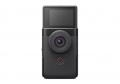

2023年5月11日，佳能*1（中国）有限公司发布一款新概念产品掌上Vlog机PowerShot V10，这款摄像机定位于时下流行的Vlog视频创作，不同于佳能传统的外形设计，其采用纵向机身设计，更适合单手持拍。佳能PowerShot V10具备丰富的智能化拍摄功能，机身十分小巧可爱，使用也非常简单，适合网红视频博主、初次接触视频创作的新手小白。无论是记录日常生活，还是想要开启自媒体之旅，用PowerShot V10去记录，去创作，用一个个小小时刻，承载和展现我们生活的精彩。微时刻，著美好！